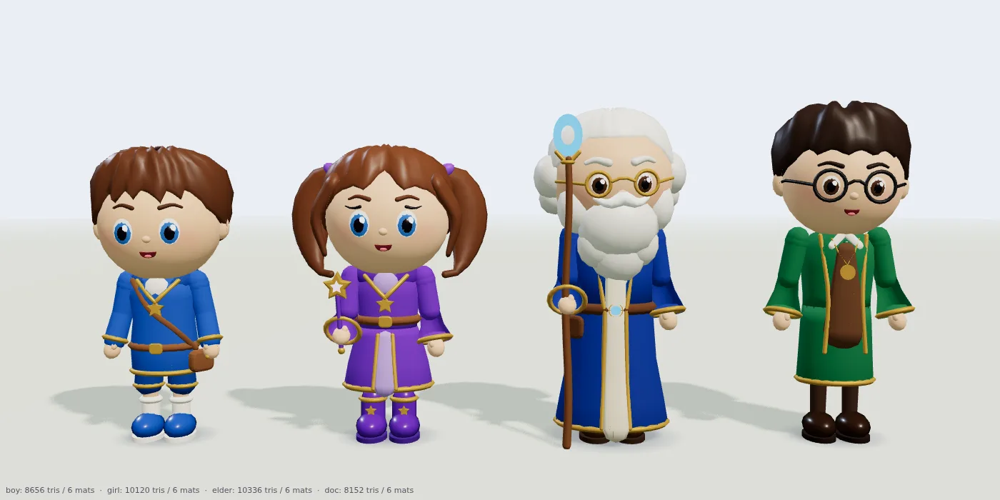
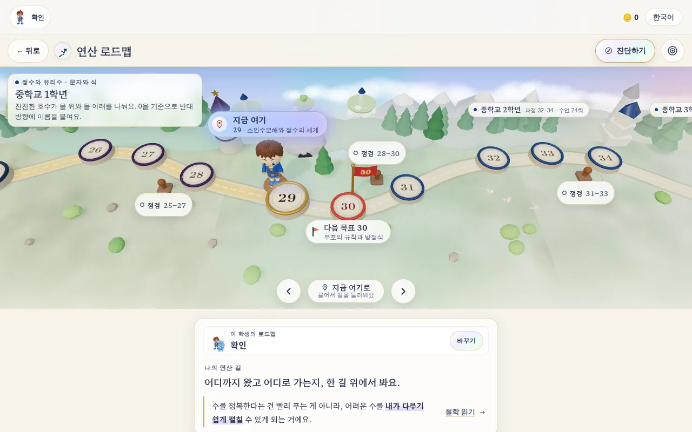
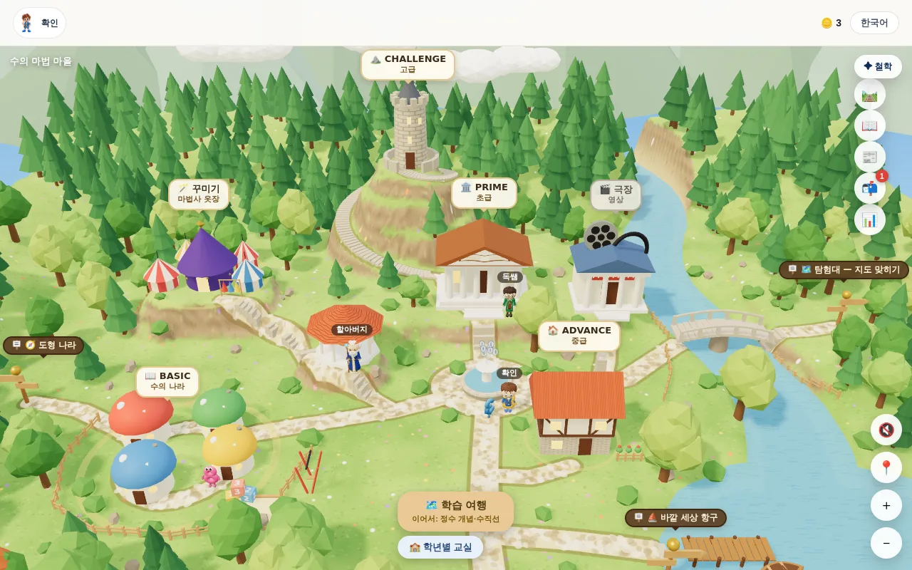
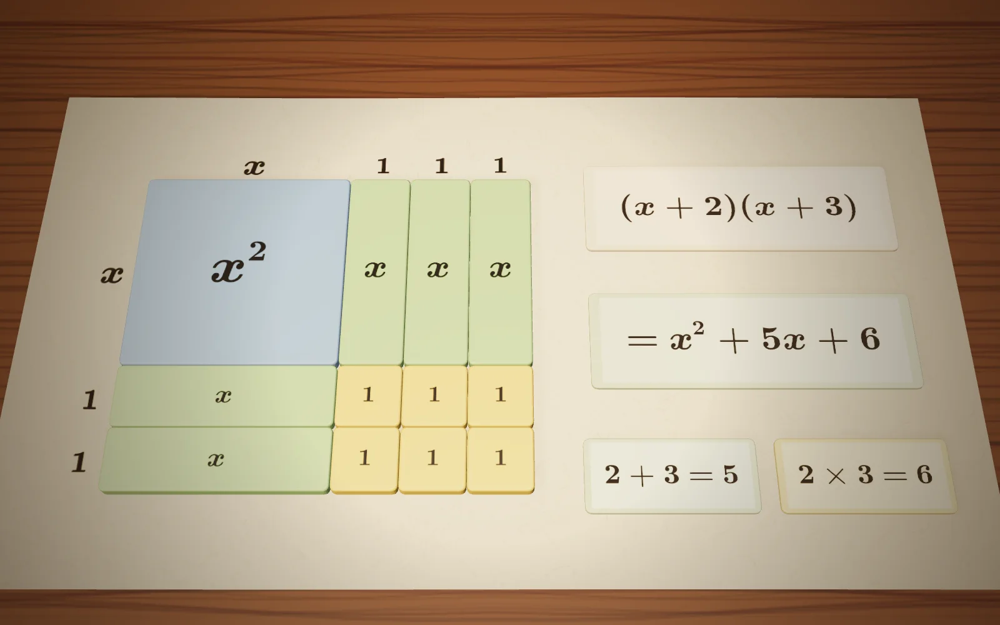
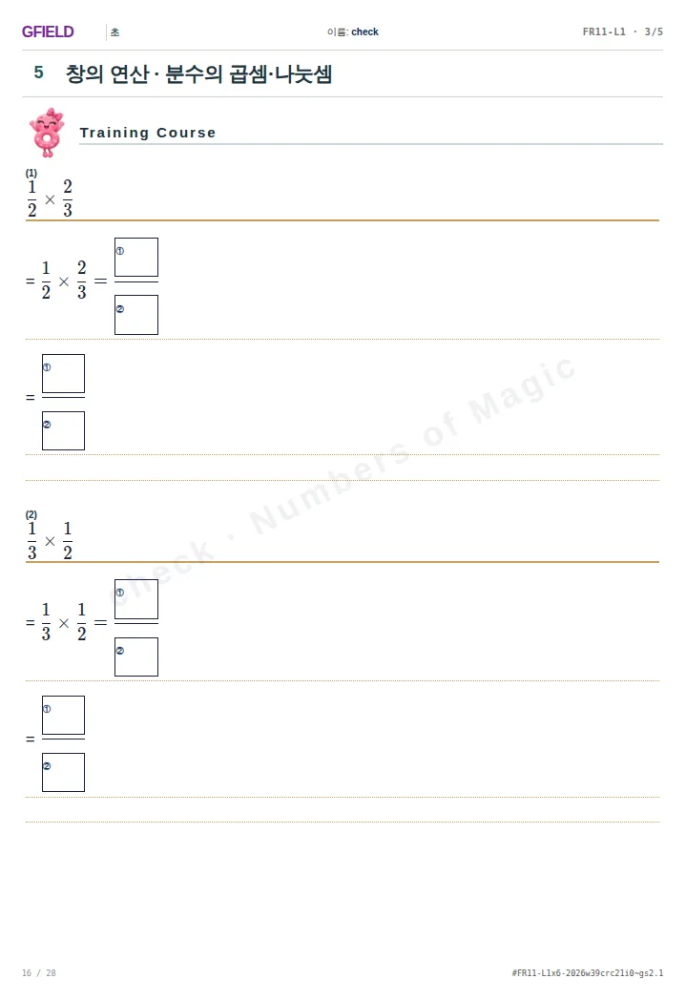
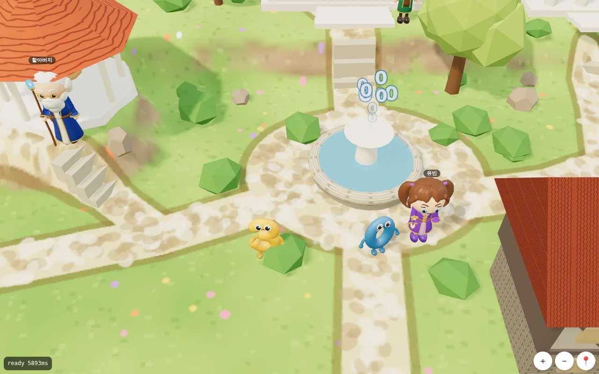
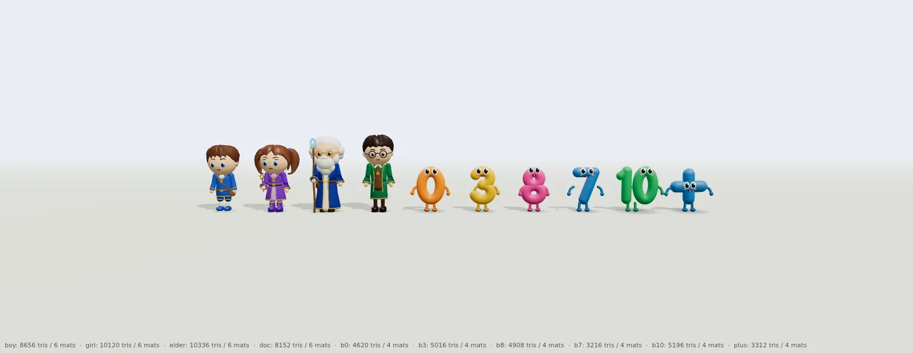

01철학독쌤의 철학
독쌤의 철학은 한쪽으로 치우치지 않는 것입니다. 언어와 사고력과 연산을 골고루 연습해야, 수를 정복하고 수학을 정복합니다.
부모님께 속도만 재는 연산이 아니라, 교과 흐름을 따라가는 필산 교과연산으로 수 감각을 키웁니다.
답을 빨리 구하는 계산 학습이 아닙니다. 수를 가지고 놀고, 문장을 이해하고, 셈을 할 수 있도록 언어·사고력·연산을 골고루.
연산만 하는 학습도, 창의 연산만 하는 학습도 아닙니다. 수의 정복을 넘어 수학을 정복하려면 세 가지가 골고루 자라야 합니다.
수를 가지고 놀고, 문장을 이해하고, 셈을 할 수 있어야 합니다. — 독쌤의 철학 · 전문 읽기
옆으로 넘겨 보세요. 영상의 장면을 실제 화면으로 다시 봅니다.

01철학독쌤의 철학은 한쪽으로 치우치지 않는 것입니다. 언어와 사고력과 연산을 골고루 연습해야, 수를 정복하고 수학을 정복합니다.
부모님께 속도만 재는 연산이 아니라, 교과 흐름을 따라가는 필산 교과연산으로 수 감각을 키웁니다.
아이의 연산 단계를 확인하고, 지금 속도가 초등 4학년에 고등 수학을 시작하는 진도인지, 초등에서 수학올림피아드를 경험하는 속도인지, 이과 최상위권을 위한 속도인지 보여 드립니다.
부모님께 상위 레벨로 가려면 무엇을 바꾸고 기간을 어떻게 줄일지, 지금의 학습 성향과 관리, 가능한 속도를 보고 설계합니다.

03로드맵유아부터 고등까지 한 길로 이어진 연산 로드맵 위에서, 주 1회, 주 2회, 속도와 양을 아이에게 맞게 정합니다.
부모님께 로드맵의 주차는 연산 트랙 기준입니다. 사고력·교과를 함께하면 그만큼 더 걸립니다.

04마을마을을 걸으며 오늘 배울 마법을 찾습니다. 유아부터 미적분까지, 그 길은 하나의 이야기로 이어집니다.
아이에게 마을을 걸으며 오늘의 마법을 찾아요. 정답보다 어떻게 생각했는지가 더 멋져요.
곱해서 10이 되는 짝을 먼저 묶으면, 4 곱하기 7 곱하기 5도 금방 풀립니다. 답은 하나지만, 길은 여러 개입니다.
부모님께 어려운 수를 내가 다루기 쉬운 수로 펼치는 힘. 이 작은 습관이 나중에 분배법칙이 됩니다.

063D · 수학사어려운 개념은 손에 잡히는 3D로 만나고, 수학사와 게임을 통해 왜 그런지, 그 증명 과정까지 알게 됩니다.
부모님께 공식을 외우기 전에 넓이로, 저울로, 그래프로 먼저 봅니다. 기호는 맨 뒤에 옵니다.

07학습지매주 한두 번 학습지를 받거나 인쇄하고, 더 연습하고 싶으면 같은 과정을 더 풀거나 더 높은 난이도로 올라갑니다.
부모님께 연산은 가정에서 매일 하는 것입니다. 그래서 수업이 아니라, 매일 돌아가는 학습지와 계획을 드립니다.
매주 학습지와 진도 안내는 학부모님 휴대폰으로 갑니다.
부모님께 문자로 받은 링크를 열면 이번 주 학습지입니다. 인쇄해서 풀고, 다음 주에 다시 받습니다.

09함께학생과 부모님과 학원이 함께 문화를 만들어야 한다는 독쌤의 철학, 넘버스 오브 매직에서 경험하세요.
부모님께 문장 이해력은 연산과 함께 자라야 합니다. 그래서 세 사람이 같이 갑니다.
지금 과정과 빠르기로 앞으로의 길을 그려, 세 기준과 나란히 놓아 봅니다.
지금 속도는 세 기준 중 어디에 가까울까요?
그리고 상위 레벨로 가려면 무엇을 바꾸고 기간을 어떻게 줄일지 — 지금의 학습 성향과 관리, 가능한 속도를 보고 설계해 드립니다.
참고용 비교 · 결과를 약속하지 않습니다 · 연산 트랙 기준

그냥 던져 주는 학습지가 아닙니다. 학생과 부모님과 학원이 함께 문화를 만들어야 한다는 독쌤의 철학, Numbers of Magic에서 경험하세요.
만 5세부터 시작합니다아이의 나이와 지금 하고 있는 연산을 알려 주시면, 어디서 시작할지 함께 봅니다.
상담은 카카오톡 오픈채팅으로 받습니다. 이 페이지는 아무 정보도 수집하지 않습니다.